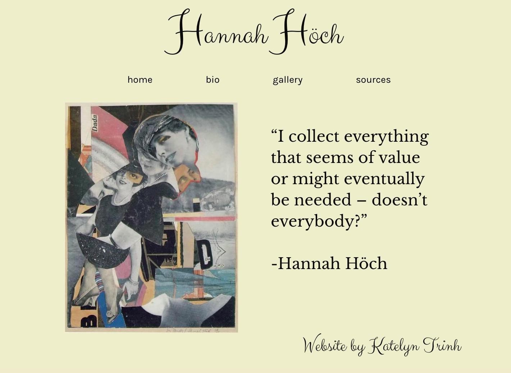
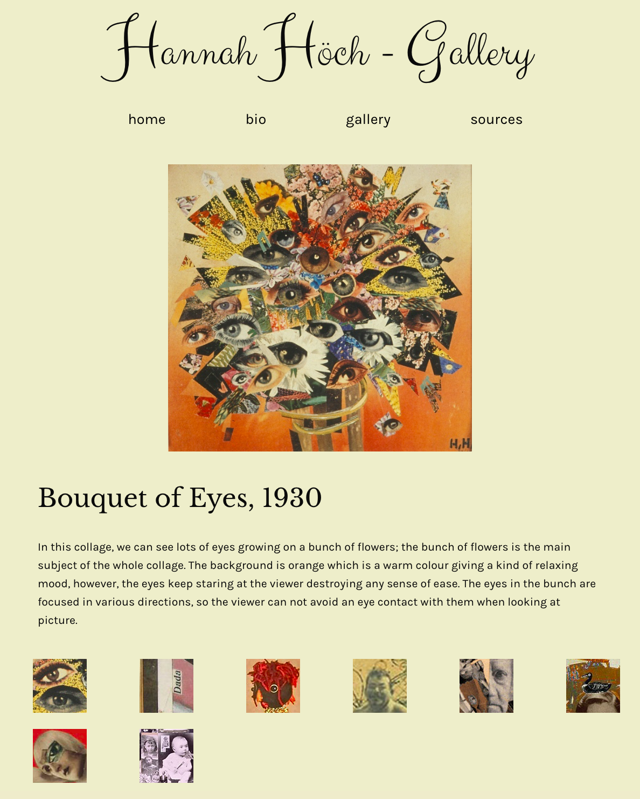
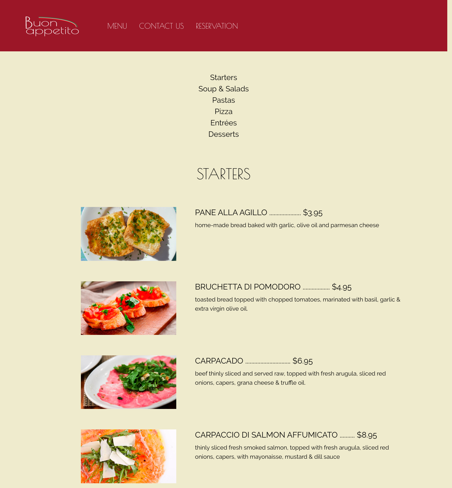

Long-scrolling Website (Work in Progress)
2018, web design project inspired by the scenery of Main Street U.S.A., Disneyland
Restaurant Menu Site
2017, web design project inspired by Cosmic Comics by Italo Calvino

2017, web design project. Gallery for WWII artist Hannah Hoch

